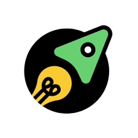

La scelta...
 Ad agosto circa, si conclude la collaborazione con E-Development, e devo fare una scelta su cosa fare nella vita: mi rendo conto che le aziende richiedono diverse skills e/o esperienza lavorativa.La mia esperienza lavorativa dunque rimaneva troppo generica per risulare "vendibile" per una posizione lavorativa: da qui la scelta di iscrivermi a Start2Impact.
Ho conosciuto la piattaforma tramite diversi YouTuber come Marcello Ascani e Raffaele Gaito e per quanto esposto dalla pagina Instagram "Marketing Espresso".
I progetti sono attestazioni concrete di quello che sai fare e ci sono dei professionisti del settore dedicati alla lettura degli elaborati con spiegazioni punto per punto.
Progetti
Diversi sono stati progetti ritenuti positivi che andrò di seguito ad elencare ed allegare e su alcuni vedrò di entrare un pò più nello specifico:Seo e Copywriting
Vorrei descivere sinteticamente il lavoro dei due progetti in quanto sull'articolo che ho scritto per il progetto di copywriting, ho poi svillupato il progetto di Seo.L'articolo riguarda i vantaggi della mobilità elettrica: ho voluto utilizzare un linguaggio informale (un pò come sto facendo ora) e dunque utilizzando un tone of voice colloquiale tramite l'utilizzo di emoji e riflessioni personali, cercando così di pormi allo stesso livello del lettore.
Immaginandolo nella mia stessa fascia di età, come emerso dai dati d iricerca di Facebook, ho introdotto alla fine una CTA con l'obiettivo di iscriversi alla newsletter per permettere un costante aggiornamento: trattandosi di ragazzi alla ricerca della prima auto.
Seo Audit
 Ho voluto effettuare il progetto di analisi sul sito dei fratellilapietra in quanto trattano una tipologia di agricoltura sostenibile attraverso la coltivazione idroponica che riduce l'impatto sull'ambiente.
Ho voluto effettuare il progetto di analisi sul sito dei fratellilapietra in quanto trattano una tipologia di agricoltura sostenibile attraverso la coltivazione idroponica che riduce l'impatto sull'ambiente. L'analisi si è strutturata su più aspetti:
- Analisi lato utente
- Analisi lato Google
- Analisi Velocità
- Analisi Site Audit
- Struttura
Per l'analisi lato utente ho effettuato un controllo dell'andamento del sito, nella sua costruzione e rapdità oltre all'impatto visivo: ho subito evidenziato dei problemi di velocità (confermato poi dall'analisi) oltre ad non aver apprezzato la scelta dello scorrimento della home ritenuta un pò fastidiosa. Tale lavoro mi ha portato ha l'utilizzo di diversi strumenti come ScreamingFrog per un'analisi più accurata dello stato delle pagine, della indicizzazione così come per il calcolo dell'index ratio e per la presentazione della struttura del sito stesso.
Dopodiché ho utilizzato PageSpeed Insights per l'analisi della velocità del sito e la contestuale proposizione di soluzioni.
Per l'analisi di Site Audit ho usufruito in particolar modo di Ubersuggest per un'analisi dello stato del sito più nello specifico rispetto ad i numeri di sintesi. Infatti, ho potuto esaminare le problematiche inerenti le varie pagine e ho dato delle idee per il miglioramento della DA (Domain Authority).